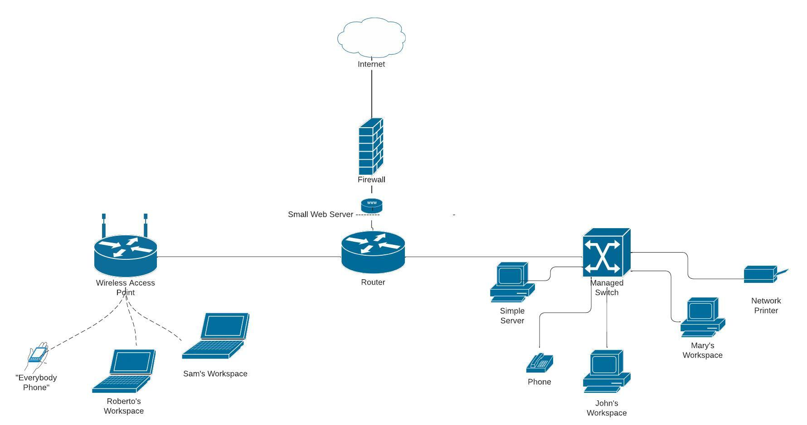

Basic Network and Security Documentation for a Small Office
Susanne M Jimenez
Northern Arizona University
10/29/2024
Abstract
This project provides an overview of the process of developing a network and security plan for a small office environment. The focus is on building a basic network diagram, implementing security protocols, and establishing an incident response plan.
Introduction
In today’s digital age, small businesses are increasingly dependent on technology for their daily operations. . Many small offices lack dedicated IT support, which makes it critical to establish clear and effective network and security documentation. This project provides a structured approach to managing the basic office network and securing the environment. By creating a simple network diagram, establishing basic security protocols, and developing an incident response plan, this documentation will empower the small office staff to better understand and manage their own IT environment.
Background
The small office in this project consists of four employees, but they might hire another person down the road as they grow. They would like a shared network for their internet services, file sharing, and one office printer. So far, they have not had any incidents. Since they believe they will grow in the next few years, they wanted something manageable but could also frow. The project s intended to address these gaps by providing easy-to-follow documentation that any employee, regardless of technical background, can understand and implement. However, at this time the office manager Sam will be responsible. It should be noted that Sam is also an IT student. This documentation is designed to reduce the complexity of network management and introduce a policy to follow if there is an incident.
Network Diagram Creation
The first step in this project was to create a network diagram to map out all devices and connections within the office. The diagram was created using Lucidchart which is an online diagramming tool. Lucidchart. Allowed for easy visualization of the physical and logical structure of the network. (LucidChart) The objective was to make the diagram simple enough for non-technical staff to understand it while still providing enough detail for Sam to manage their network. 
Key Components of the Network Diagram:
- Workstations for four employees (John, Roberto, Mary, and Sam)
- Network Printer for shared office printing
- Wireless Access Point for wireless connectivity
- Managed Switch for network segmentation
- Small Web Server managed by Amazon Web Services (AWS) for hosting resources
- Router to connect the office network to the internet
- Simple Server with local storage synced to AWS incremental backup
These components are sufficient to get the small office operational. The diagram clearly identifies each component and its use on the network. This provides a clear understanding of the physical and logical structure.
Security Protocol Development
After the network diagram was completed, the next step was to develop basic security protocols to protect the network. These security protocols include password management guidelines, device access policies, and rules for sharing resources. The primary focus was on keeping the security measures straightforward and manageable for a small office without a dedicated IT department.
Security Measures Include:
- Regular Password Changes: Enforcing a 60-day password change policy through Active Directory using open Group Policy Management Console (GPMC). How to configure a password policy in AD
- Windows Defender: Use Group Policy settings to configure and manage Microsoft Defender Antivirus. Microsoft Defender setup guide
- Wireless Security: Configured WPA3 and hidden SSID to protect network access. WPA3 explained